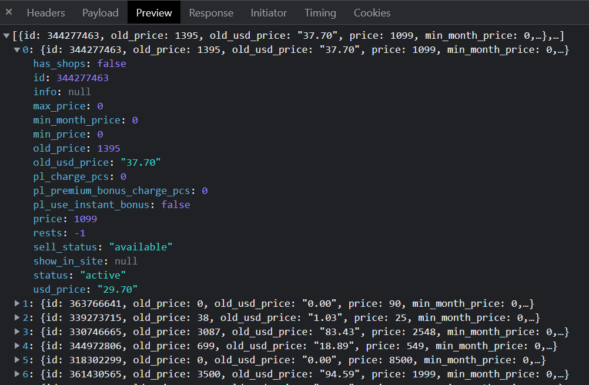

-
Задача 1:
Описати масив об’єктів – сайтів розроблених компанією з такими властивостями
----- Властивості ------
- назва компанії на час розробки (назву періодично змінюють)
- власник компанії
- споснсори (масив спонсорів)
* прізвище спонсора
* ім’я спонсора
* сума вкладень спонсора
- рік випуску
- вартість сайту
Знайти:- загальну вартість усіх сайтів
- кількість сайтів, що було зроблено між 2000 та 2009 рр.
- кількість сайтів, де сума спонсорських вкладень була більшою за 100000
- створити загальний список усіх спонсорів (поки можуть повторюватись, просто зібрати усі у масив)
- знайти рік, коли прибуток був найбільшим
- упорядкувати список за спаданням прибутку
- Створити 2 окремих списки з копіями об’єктів, що містять сайти з вартість до 100000 і більше 100000
-
Задача 2:
Розробити функцію, у яку передають об’єкт (день, місяць, рік). Визначити, який буде рік через N місяців.
Рішення -
Задача 3:
Ось приклад відповіді з одного з сайтів (масив об’єктів з інформацією про товари)

(весь текст масиву, що в кінці документу скопіюєте в код).- Загальну вартість (нові ціни - price)
- Знайти кількість товарів, у яких ціна зменшилась (price < old_price).
- Товари, які доступні (sell_status:"available")
- сформувати новий список об”єктів тільки доступних для продажу товарів, які міститимуть тільки ідентифікатор товару (id), нову ціну (price), стару ціну (old_price), та ціну у доларах (usd_price)